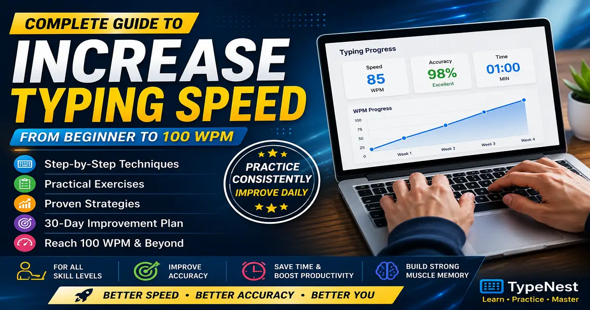

Typing Speed
Complete Guide to Increase Typing Speed
Learn proven techniques, daily practice routines, and expert tips to increase your typing speed while maintaining excellent accuracy and long-term consistency.
📖 6 min read
Read Guide →